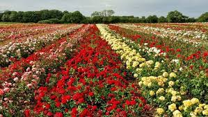

ISPARTA HAKKINDA
“Güller ve Göller Şehri” olarak tanınan ve binlerce yıllık tarihe sahip olan Isparta; kültürüyle, ekonomisiyle, turistik ve doğal güzellikleriyle ülkemizin, Batı Akdeniz Bölgesinin en gözde illerinden biridir.
Türkiye'nin tarım ve turizm cennetlerinden birisi olan Ispartamız, en önemli varlıklarından bir tanesi olan gülün Türkiye merkezidir. Dünya çapında gül ve gül ürünlerinin talebinin yarısı Türkiyenin bu nadide şehrinden alınmaktadır.
Isparta İli, Akdeniz Bölgesi'nin kuzeyinde Göller bölgesinde yer alır. 8.933 km2'lik yüzölçümüne sahip olan şehrin rakımı ortalama 1050 metredir. İlin % 68,4'ü dağlar, % 16,8'i ovalar ve % 14,8'i platolardan oluşur.
2018 TÜİK verilerine göre şehrimizin nüfusu 441 bin 412'dir. 2018 verilerine göre Isparta nüfusunun 258 bin 375'i şehirde yaşarken, 183 03 si belde ve köylerde yaşamaktadır. 13 ilçeye ve 203 köye sahip olan şehrimiz, nüfus bakımından Türkiye'de 45. sırada yer almaktadır. Nüfus bakımından en büyük ilçeleri sırasıyla Merkez, Yalvaç, Eğirdir ve Şarkikaraağaç' tır. Nüfus bakımından en küçük ilçesi Yenişarbademli'dir. Yüzölçümü bakımından en büyük ilçesi Eğirdir, en küçük ilçesi ise Atabey'dir.
Cumhuriyet Türkiye’sinde eğitimde, sağlıkta, konutta, alt yapıda sorunlarını çözmüş Türkiye’nin tek ili olmanın sevincini yaşayan Isparta; Milattan Önceki yıllardan itibaren “Pisidia” olarak bilinen bölge üzerine kurulmuştur.
Tarihi dönemlerde Hitit egemenliği altındaki bu bölgeye daha sonra Frigler, Lidyalılar, Persler hakim olmuştur. Tarihi kaynaklarda “Pisidia” adına ilk kez M.Ö. 5. yüzyıl sonunda rastlanır. Isparta ya da tarihindeki adıyla “Baris” şehrinin kuruluşu ise, Lidyalılar dönemine rastlar. III. Kılıçarslan döneminde, 1204 yılında Türklerin eline geçen kent, Cumhuriyet öncesinde Konya vilayetine bağlı “Hamidabad” adında bir livalık iken, 1923 yılında müstakil il olmuş ve 1926 yılında “Isparta” ismini almıştır.
Geçmişten günümüze gelen tarihi eserler ve antik kentler yerli ve yabancı turistlerin tarihle buluşma noktasıdır. Tarihin her dönemindeki uygarlıklardan izler taşıyan Isparta, İlk Çağ ve Helenistik Dönemde inşa edilen antik kentleriyle dikkat çeker. Helenistik Dönemde kurulan antik şehirlerden en önemlisi ise Yalvaç ilçesinde bulunan PİSİDİA ANTİOCHEİA kentidir.
İlk vaazın verildiği, ayrıca ilk Hıristiyan kiliselerinden olan ST. PAUL KİLİSESİ de Antiocheia’da bulunmaktadır. Geçmişi günümüze taşıyan bu kutsal alanlar Yalvaç ilçesini inanç turizminin merkezi haline getirir. St. Paul’un Antiocheia’ ya gelişinde geçtiğine inanılan, Yazılı Kanyon’da günümüzde de yürüyüş programları düzenlenmektedir. Yazılı Kanyon’da bulunan Kaya Yazıtları da ST. PAUL ‘un buradan geçtiği inancını güçlendirmektedir.
Isparta, Anadolu'nun Türkleşmesinde önemli bir yer tutar. Malazgirt' ten sonra 1176' da kazanılan Miryakefalon Savaşı Isparta topraklarında gerçekleşmiştir. Anadolu Selçuklu Devleti’nin çöküşüyle bir süre Hamitoğulları Beyliği hakimiyetine giren Isparta, 1426 yılında Osmanlı topraklarına katılır.
Türk ve dünya tarihinde önemli bir yere sahip olan Osmanlı imparatorluğu döneminde Isparta pek çok devlet adamı yetiştirmiştir. Koca Haydar Paşa, Hüseyin Avni Paşa, Halil Hamit Paşa, Seyit Ali Paşa, Hüseyin Ali Paşa Osmanlının sadrazamlarıdır yani Başbakanlarıdır. 1923’te Cumhuriyet’in ilanından sonra vilayet olan Isparta hem Başbakan hem de Cumhurbaşkanı çıkarır SÜLEYMAN DEMİREL. Merkeze bağlı İslamköy doğumlu Süleyman Demirel’in memleketinde, adını yaşatacak birçok değer bulunmaktadır.
ISPARTA; GÜZELLİKLERİ BİTMEYEN COĞRAFYA
Göller Bölgesinin merkezi niteliğindeki Isparta, coğrafyası üzerinde bulunan zengin doğal güzellikleri ve kültürel varlıkları ile her türlü turizm çeşitliliğine imkan veren, potansiyel bir turizm merkezidir.
Isparta sınırları içerisinde bulunan Eğirdir Gölü başlı başına bir değerdir. Etrafını çevreleyen çeşitli yükseklikteki dağlar bölgenin incisi olan Eğirdir Gölüne ayrı bir güzellik katar. Ayrıca sınırları içerisindeki Kovada, Gölcük Krater, Beyşehir ve Burdur Gölleri gibi birçok doğa harikasını da barındırır. Bu doğal yapı göl, dağ turizmine imkan sağlamış, balık avcılığı, su sporları ve her türlü doğa sporlarına sunduğu imkanlarla da eşsiz bir yurt köşesi olmuştur.
DAVRAZ DAĞI Isparta’da Eğirdir ve Kovada gölleri arasında yükselen ve Isparta Ovasını kuşatan dağ kütlelerinden biri olup, 2637m yüksekliğindedir. Dağın yüksek yamaçlarından Isparta Ovasını ve Eğirdir gölünü doyumsuz izleme imkanı vardır. DAVRAZ KAYAK MERKEZİ, Antalya’ya 154 km., il merkezine ise 26 km. uzaklıkta olan Akdeniz Bölgesinin en önemli turizm merkezidir.
Isparta’nın doğal güzelliklerini zenginleştiren mesire yerleri Isparta insanı için vazgeçilmez yerlerdir. Isparta’nın en meşhur yemeği FIRIN KEBABI’dır. Kuzu-oğlak veya erkeç etlerinin kaburga kemiğinden yapılan fırın kebabının en büyük özelliği taş fırında pişirilmesidir. Kök odunu veya meşe odunuyla üç buçuk saatte pişirilen fırın kebabı tadına doyum olmaz bir lezzete ulaşıyor. Ayrıca Eğirdir gölünün lezzetli balıklarının değer kattığı bulgurlu Sazan Dolması ile Yalvaç ilçesinin mahalle fırınları Isparta yemek kültürünün en önemli zenginliklerindendir.
Modern ve çağdaş eğitim ve sağlık kuruluşlarıyla birlikte zengin doğal ve kültürel zenginlikleri kentin yaşam kalitesini arttırmasıyla sadece bu kent halkına değil, yaşama sevinci olan herkese zevkli ve sağlıklı yaşama imkanı sunmaktadır. Gül tarlalarından halı bahçelerine uzanan yolunu geçmişten bugüne nakış nakış işleyen Isparta, kimi zaman yavaş kimi zaman hızlı; ama, hep ileriye doğru atılan adımlarla yol almaya devam ediyor.